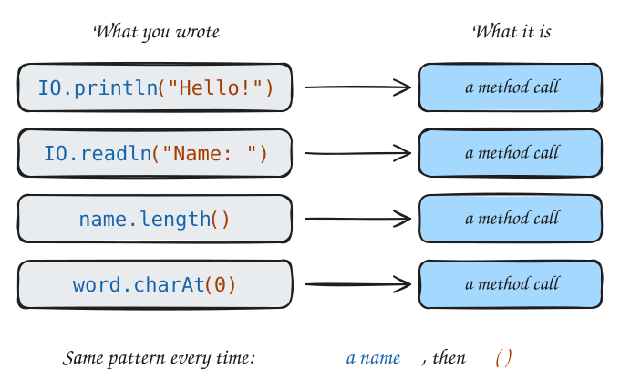
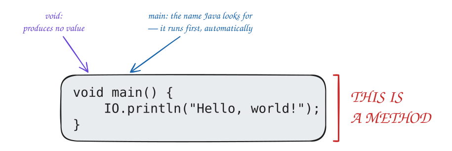
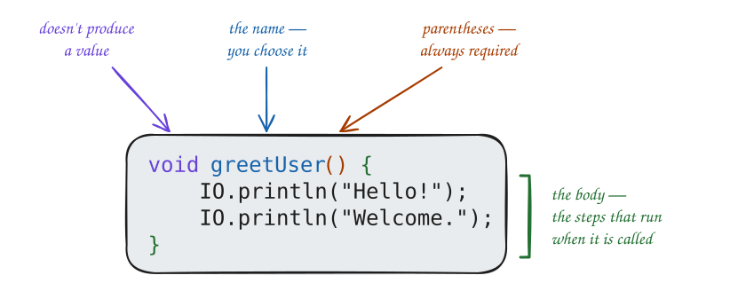

Every single one of these is a method call: you wrote a name followed by (), and a group of instructions ran.

You have been calling methods since Day 1. Today, you learn how to write your own.
The Duel
Picture the final duel. Harry faces Voldemort.
Spells are flying back and forth.
Harry does not shout:
“I am gathering magical energy in a protective dome shape around myself, calibrating the resonant frequency to deflect incoming dark magic, initializing the shield at full power…”
He shouts:
“Protego!”
Voldemort does not announce:
“I am directing a focused stream of lethal dark energy toward you at approximately 45 degrees, initiating the killing curse sequence…”
He shouts:
“Avada Kedavra!”
Each spell is a name for a complex sequence of actions. In the heat of battle, nobody cares about the steps — they call the spell, and the spell knows what to do.
The Duel in Java
In Java, a spell looks like this — you write the steps once, under a name:
voidavadaKedavra(){ IO.println("*a jet of green light flies*"); IO.println("*the killing curse is cast*");}voidprotego(){ IO.println("*a shimmering shield materializes*"); IO.println("*the curse is deflected*");}
And the duel itself:
voidmain(){avadaKedavra();// Voldemort attacksprotego();// Harry defendsavadaKedavra();// againprotego();// again IO.println("Harry wins.");}
main reads like the battle. The details of each spell are tucked away inside their own block.
The only difference from real magic: you write the spells yourself. Once you have, calling them is exactly that simple.
Note
In the next two lectures you will learn how to make spells that take input (“cast at this target”) and produce a result (“and tell me if it worked”). For now, every method just does its thing.
Methods Are Mini-Recipes
Imagine writing a recipe for a full Thanksgiving dinner.
At one point it says: “Step 3: Make the gravy.”
It does not paste the entire gravy recipe into the middle of the Thanksgiving recipe. It just says the name. The gravy recipe exists separately, and you look it up when you need it.
Your program works the same way:
main is the head chef: it coordinates everything but delegates the actual work. The head chef doesn’t need to know how to make gravy, just when to call for it.
void main() — You Already Wrote a Method
Look at every program you have written this semester. That void main() { ... } around your code — that is a method. You have been writing one since Lecture 1 without knowing it.

main is the method Java runs automatically when your program starts. Everything inside its braces is its body.
void means this method does not produce a value. Every method in this lecture starts with void; methods that do produce a value come in a later lecture.
You already know how to write a method. Now you will write them with names you choose.
main Is Special
main is a method — but it is a special one. Three rules set it apart from every other method you will write:
Every program must have a main. Java looks for it to know where to start. No main means no starting point, and Java stops with an error.
There must be exactly onemain. If you write void main() twice, Java can’t pick a starting point. That is also an error.
Java always starts at main, and only at main. Every other method sits quietly until something calls it.
voidmain(){// Java starts here — always}voidprintBanner(){// this only runs if something calls printBanner()}
Think of main as the opening scene. Every story has to start somewhere. In a Java program, it always starts at main.
Warning
If your program produces no output and you are not sure why — check that you have a main method, and that your code is inside it.
Why Write Your Own Methods?
There are three reasons to write your own methods:
Avoid repetition. Write a group of instructions once. Call it as many times as you need. Never copy-paste the same lines again.
Give things names.printHeader() tells the reader exactly what is about to happen. Three raw IO.println lines tell them nothing until they’ve read all three.
Change in one place. Need to update the steps? Update the method body, not every place you used it.
These three benefits compound as programs get longer. Let’s see them in action.
If the header appears twenty times, you write printHeader(); twenty times, not sixty lines of IO.println. And to update the style, you still change just one place.
Defining a void Method
A void method has this structure:
voidmethodName(){// the body — steps that happen when this method is called}
Here is a real one, with every part labeled:

Nothing here is new. You have seen every piece before: void and () in main, { } in if statements, and names that follow the variable-naming rules.
Method Examples
Here are three methods, each doing one clear thing:
voidprintSeparator(){ IO.println("--------------------");}voidprintWelcome(){ IO.println("Welcome to COSC 120!"); IO.println("Let's write some Java.");}voidprintGoodbye(){ IO.println("Thanks for learning with us."); IO.println("See you next class!");}
You can read each name and know exactly what it does — before reading the body. That is what a good method name does.
Use camelCase: printHeader, not PrintHeader or print_header
Start with a verb: print, show, draw, display, compute, check
Be specific: printEventSchedule() beats printStuff()
Tip
If you cannot name a method clearly, it might be trying to do too many things. Split it into smaller methods, each with one job and one clear name.
Calling a Method
Once a method is defined, you call it — write its name, parentheses, semicolon:
voidmain(){printWelcome();// the lines inside printWelcome run nowprintSeparator();// then the lines inside printSeparatorprintGoodbye();// then the lines inside printGoodbye}
That is the whole spell. One line. The details are inside the method.
You can call the same method as many times as you want:
Each call runs the method body fresh, from top to bottom. One definition. Unlimited calls.
Note
In Java, the order of method definitions does not matter. You can write printWelcome below main and Java will still find it. Java reads all the definitions before running anything.
The Flow of Execution
When your program hits a method call, here is exactly what happens. Step through it:
voidmain(){// 1. Java starts here IO.println("Before");// 2. prints "Before"printBanner();// 3. JUMP to printBanner IO.println("After");// 6. back here — continues}voidprintBanner(){// 4. runs from top to bottom IO.println("=========");// prints "=========" IO.println(" Hello! ");// prints " Hello! " IO.println("=========");// prints "========="}// 5. closing brace — COME BACK
Output:
Before
=========
Hello!
=========
After
The program jumps into the method, runs it completely, then comes back to the next line in main.
“After” prints after the banner, not before it.
What happens when you call the same method twice?
voidmain(){ IO.println("Round 1:");printBanner();// jump in, run, come back IO.println("Round 2:");printBanner();// jump in again, run again, come back IO.println("Done.");}
Two separate trips. Each time, the method runs from top to bottom, then execution returns to main.
Methods That Call Other Methods
A method can call other methods inside its body — this is how large programs are built.
Start with three small helpers, each printing one part of a movie ticket:
voidprintHeader(){ IO.println("============================"); IO.println(" MOVIE TICKET "); IO.println("============================");}voidprintDetails(){ IO.println("Movie: The Matrix"); IO.println("Date: Saturday, Aug 22"); IO.println("Time: 7:30 PM"); IO.println("Seat: Row C, Seat 12");}voidprintFooter(){ IO.println("============================"); IO.println(" Enjoy the show! "); IO.println("============================");}
Then one method that calls all three, and a main that calls that:
voidprintTicket(){printHeader();printDetails();printFooter();}voidmain(){printTicket();// one line. that's it.}
printTicket is just like main: a list of calls, each one a jump into another method and back.
Output:
============================
MOVIE TICKET
============================
Movie: The Matrix
Date: Saturday, Aug 22
Time: 7:30 PM
Seat: Row C, Seat 12
============================
Enjoy the show!
============================
Order of calls:
main calls printTicket
printTicket calls printHeader: runs, comes back
printTicket calls printDetails: runs, comes back
printTicket calls printFooter: runs, comes back
printTicket ends: back to main
Three levels of detail, each at the right level. You never have to hold the whole program in your head at once. You zoom in only as far as you need to.
Code Example — Event Schedule
A complete program that uses everything so far. Read main first, like a table of contents:
You can already guess the shape of the output, before reading a single method body.
Then the four methods it calls:
voidprintSeparator(){ IO.println("--------------------------------");}voidprintWelcome(){ IO.println(" Welcome to the COSC 120 Lab! "); IO.println(" Instructor: Sayan ");}voidprintClosing(){ IO.println(" Questions? Email sgoswami@smcm.edu"); IO.println(" See you there! ");}
voidprintSchedule(){ IO.println("9:00 AM Opening remarks"); IO.println("9:15 AM Team introductions"); IO.println("10:00 AM Lab session 1"); IO.println("12:00 PM Lunch"); IO.println("1:00 PM Lab session 2"); IO.println("3:00 PM Demos and wrap-up");}
Before the next slide, predict the output.
Output:
--------------------------------
Welcome to the COSC 120 Lab!
Instructor: Sayan
--------------------------------
9:00 AM Opening remarks
9:15 AM Team introductions
10:00 AM Lab session 1
12:00 PM Lunch
1:00 PM Lab session 2
3:00 PM Demos and wrap-up
--------------------------------
Questions? Email sgoswami@smcm.edu
See you there!
--------------------------------
main reads like a table of contents. Each method does exactly one thing.
Every change has a one-place answer:
Different separator style? Change only printSeparator.
Add a new event? Add one line to printSchedule.
Print the schedule twice? Add one more printSchedule(); call in main.
Common Mistakes
1. Defining a method but never calling it
voidprintBanner(){// defined... IO.println("=====");}voidmain(){ IO.println("Hello!");// ...but never called — banner never prints}
Java does not warn you. The method simply never runs.
2. Forgetting () when calling
printBanner;// ✗ — not a method call; won't compileprintBanner();// ✓
3. Writing code outside any method
IO.println("Hello");// ✗ — not inside any method; won't compilevoidmain(){ IO.println("Hello");// ✓}
Every executable line must live inside the { } of some method.
4. Naming a method something vague
voidstuff(){...}// ✗ — what does "stuff" do?voiddoIt(){...}// ✗ — do what, exactly?voidprintEventSchedule(){}// ✓ — says exactly what it does
A method name is a promise to whoever reads the code. Keep it.
Key Takeaways
A method is a named group of instructions. To call it, write its name, (), and ;.
Define a void method as void name() { ... }. void means it produces no value.
Defining does not run it. Only a call runs the body.
On a call, the program jumps into the method, runs every line, then comes back to the next line after the call.
You can call a method as many times as you like, and methods can call other methods.
main is the one method Java runs automatically. Every program needs exactly one.
Name methods with a verb phrase in camelCase: printHeader, showMenu.
Worksheet
Problem 1 — Trace it. What does this program print? Work through it step by step on paper, then run it to check.
Problem 2 — Spot the bugs. Find every mistake, fix it, and run it.
Java
void printTitle {
IO.println("= My Program =")
}
void main() {
IO.println("Starting...");
printTitle
IO.println("Done.");
}
IO.println("This line is floating around.")
Terminal
(How many bugs are there? What kind of error does each one cause?)
Problem 3 — Write it.
Write a method printDivider that prints a line of 20 asterisks.
Call it from mainthree times, with IO.println("Section")between each call.
Java
Terminal
Problem 4 — Write it. Write a program with three methods:
printOpening — prints a title and a subtitle
printBody — prints three to five lines of content (a letter, an announcement, anything you like)
printClosing — prints a sign-off
Call all three from main.
Java
Terminal
Problem 5 — Write it.
Write three helpers: printReceiptHeader, printReceiptItems, and printReceiptFooter. Each prints two to four lines.
Write printReceipt, which calls all three helpers.
Call printReceipt from main.
Java
Terminal
Problem 6 — Write it (synthesis). Print a coffee shop menu.
Use at least four methods.
Keep main to six lines or fewer.
Make the output look like something you would actually hand to a customer.
![A large orange recipe card titled 'Thanksgiving Dinner', labeled void main(), lists four steps: roastTurkey(), makeSides(), makeGravy(), serveDinner(). Four arrows point down to four smaller gray cards, one per method, each listing its own steps: roastTurkey() — season the turkey, roast for 4 hours, let it rest; makeSides() — mash the potatoes, bake the stuffing; makeGravy() — whisk the drippings, add flour + stock, simmer; serveDinner() — set the table, carve the turkey, serve. Caption: 'main says WHAT happens, in order. Each method knows HOW.'](diags/08-recipe-hierarchy.svg)
![Two panels. Left, '✗ Without a method': the score board code as five stacked blocks; the three header blocks are yellow and each is labeled 'copy #N — edit here'. Caption: 'Change the style? Edit 3 places — and hope you don't miss one.' Right, '✓ With a method': a green box holding the printHeader() definition, labeled 'defined once — edit here only', and below it main with three green printHeader(); calls, each with an arrow leading back up to the single definition. Caption: 'Change the style? Edit 1 place. All three calls get the new version.'](diags/08-change-one-place.svg)
![Two columns. Left column, main(): box 2 'IO.println("Before");', then a yellow box 'printBanner();'. A red arrow labeled '3. JUMP in' goes from printBanner(); to the right column, printBanner(), which has three blue boxes: the two '=========' printlns with the ' Hello! ' println between them, labeled '4. run every line, top to bottom'. Meanwhile a dashed gray line under printBanner(); in the left column is labeled 'main waits here'. From the bottom of the right column a green arrow labeled '5. end of method — COME BACK' returns to the left column at box 6, 'IO.println("After");'.](diags/08-flow-jump.svg)